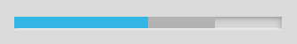
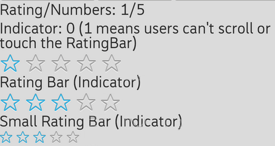

In this section, you will create a SeekBar, using the SeekBar widget.
There are three types of Sliders:
ProgressBar
A progress bar displays a bar to the user representing how far the operation has progressed.
In the indeterminate mode, a progress bar shows a cyclic animation without an indication of progress.
The indeterminate progress bar can be either a spinning wheel or a horizontal bar.
Default progress bar is a spinning wheel in the indeterminate mode.
SeekBar
A SeekBar is an extension of ProgressBar that adds a draggable thumb.
The user can touch the thumb and drag left or right to set the current progress level.
RatingBar
A RatingBar is an extension of SeekBar and ProgressBar that shows a rating in stars.
The user can touch or drag it to set its rating.
In this section, you will create a ProgressBar, using the ProgressBar widget.
void MyPage::onInit(Persistence\* const p) {
// create Scene, Context and LinearController
mpScene = Scene::SceneFactory(this);
mpContext = new gaia::core::Context(this);
gaia::ui::LinearController\* mpLayout = new gaia::ui::LinearController(this);
// create the ProgressBar
gaia::ui::ProgressBar\* mpProgressBar = new gaia::ui::ProgressBar(mpContext);
// add thet ProgressBar to the LinearController
mpLayout->addWidget(mpProgressBar);
mpScene->attachController(mpLayout);
mpScene->setupSceneLayout();
}

In this section, you will create a Horizontal ProgressBar, using the ProgressBar widget.
void MyPage::onInit(Persistence\* const p) {
// create Scene, Context and LinearController
mpScene = Scene::SceneFactory(this);
mpContext = new gaia::core::Context(this);
gaia::core::AttributeSet\* mpAttr = NULL;
gaia::ui::LinearController\* mpLayout = new gaia::ui::LinearController(this);
// create the ProgressBar
gaia::ui::ProgressBar\* mpProgressBar = new gaia::ui::ProgressBar(
mpContext, mpAttr, com::gaia::common::R::attr::progressBarStyleHorizontal);
mpProgressBar->setProgress(50);
mpProgressBar->setSecondaryProgress(75);
// add thet ProgressBar to the LinearController
mpLayout->addWidget(mpProgressBar);
mpScene->attachController(mpLayout);
mpScene->setupSceneLayout();
}
In this section, you will create a SeekBar, using the SeekBar widget.
void MyPage::onInit(Persistence\* const p) {
// create Scene and LinearController
mpScene = Scene::SceneFactory(this);
gaia::ui::LinearController\* mpLayout = new gaia::ui::LinearController(this);
// create the SeekBar
gaia::ui::SeekBar\* mpSeekBar = new gaia::ui::SeekBar(this);
// set the SeekBar's ControllerParams
gaia::ui::LinearControllerParams\* mpParams = new gaia::ui::LinearControllerParams(
800, gaia::ui::ControllerParams::WRAP_CONTENT);
mpSeekBar->setControllerParams(mpParams);
// set the SeekBar's progress
mpSeekBar->setProgress(50);
// add the SeekBar to the LinearController
mpLayout->addWidget(mpSeekBar);
mpScene->attachController(mpLayout);
mpScene->setupSceneLayout();
}

In this section, you will create RatingBar, using the RatingBar widgets.
void MyPage::onInit(Persistence* const p) {
// create Scene and LinearController
mpScene = Scene::SceneFactory(this);
gaia::ui::LinearController* mpLayout = new gaia::ui::LinearController(this);
// create the RatingBar
gaia::ui::RatingBar* mpRatingBar = new gaia::ui::RatingBar(this);
// set RatingBar's ControllerParams
gaia::ui::LinearControllerParams* mpParams = new gaia::ui::LinearControllerParams(
gaia::ui::ControllerParams::WRAP_CONTENT, gaia::ui::ControllerParams::WRAP_CONTENT);
mpRatingBar->setControllerParams(mpParams);
// set the number of stars to show.
mpRatingBar->setNumStars(5);
// set the rating (the number of stars filled).
mpRatingBar->setRating(3.0f);
// set the step size (granularity) of this rating bar.
mpRatingBar->setStepSize(1.0f);
// add the RatingBar to the LinearController
mpLayout->addWidget(mpRatingBar);
mpScene->attachController(mpLayout);
mpScene->setupSceneLayout();
}
class MyRatingBarChangeListener: public gaia::ui::IRatingBarChangeListener {
public:
MyRatingBarChangeListener(gaia::core::Page* page){};
virtual ~MyRatingBarChangeListener(){};
virtual void onRatingChanged(gaia::ui::RatingBar* ratingBar, float rating, bool fromUser){};
};
gaia::ui::IRatingBarChangeListener* listener = new MyRatingBarChangeListener(this);
mpRatingBar->setOnRatingBarChangeListener(listener);